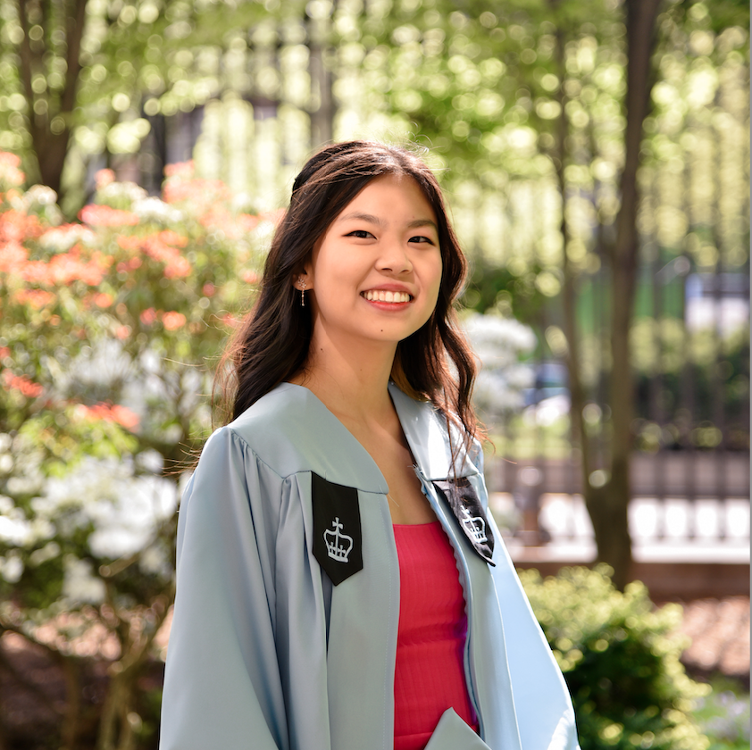

Computational Physics and Data-Driven Research
Physics PhD student at Rice University working on charmonium studies in ultraperipheral collisions.
Originally from Londrina, Brazil, I completed my undergraduate studies at Barnard College in New York City, where I majored in physics and computer science.
Currently, I am a PhD student in physics at Rice University, where my research focus on the charmonium states produced in ultraperipheral collisions, which are a unique probe of the gluon distribution inside nuclei.
I use programming extensively in my research, with a strong emphasis on C++ and Python for data analysis, simulation, and visualization.
I am also passionate about table tennis and serve as the president of the Rice Table Tennis Club, where I love building community and sharing the joy of the game.
I have been playing table tennis for over a decade and have competed at the collegiate level, with my best results being semi-finalist with the women's team at the 2023 NCTTA National Championships.
Analyzing collision data from the CMS experiment at the LHC, with a focus on ultraperipheral collisions and charmonium detection. Heavy use of C++ and ROOT for data analysis, event selection, and statistical modeling.
Learn more about the Li Lab
Processed and analyzed blazar data from the VERITAS telescope, under Prof. Mukherjee. Used Python extensively for data wrangling, statistical analysis, and creating publication-quality plots.
VERITAS |
My research story
Developed a Python package to analyze and visualize the sensitivity of the LIGO gravitational wave detectors.
Read my final report
Reflections on how joining the table tennis club shaped my graduate experience, built community, and helped me thrive at Rice.
Read postUm relato sobre o processo seletivo, adaptação, e a vida como estudante brasileira de doutorado em Física na Rice University, em Houston, Texas.
Leia o post